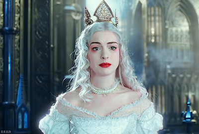

본문콘텐츠영역
- # White Rabbit
- # dormouse
- A dormouse and a white rabbit at a crazy tea party.What did they encounter?
- # Disney
- Disney-only video before the movie starts.

- # Alice
- # Wonderland
- Little Alice first arrived in a strange country.What was the first thing little Alice saw?
- # White Queen
- # Queen Hart
- The White Queen and Queen Hart are reconciling.
- # white rabbit
- What was the white rabbit working in the palace surprised to see?
- # Alice
- # in rabbit hole.
- Alice follows a white rabbit during her engagement party and falls into a rabbit hole.
- # Absolone
- # blue caterpillar
- Alice met a blue caterpillar named Absolone. I give Alice various advice.
- # Cheshire cat
- A Cheshire cat wearing a hat and floating face from nowhere.
- # Alice
- # in Wonderland
- What was the first thing Alice encountered when she fell from a rabbit hole? Alice has many experiences there.
- # White Rabbit
- # Twins
- Twins in Wonderland, White Rabbit, Unknown Bird and Talking Flower. Where is this place?
- # Queen Heart
- # Alice
- # Nave
- she's a cruel mistress, and a bargain must be made.
- # crazy tea party
- # March rabbit
- March rabbit I met at a crazy tea party. The name is derived from Asmad as a marchare.
- # White Queen
- # potion
- The White Queen I finally met! A strange conversation with a suspicious potion he makes.
- # Newspapers
- Newspapers in Wonderland. The whole story is written here.
- # hatter
- # clock
- A hatter I met at a crazy tea party. He has a clock that shows the date but does not show the time.

- # war
- # Alice
- # White Queen
- Alice and the White Queen leaving for war. What will happen to the war?
- # Hatter
- # Alice
- Hatter having a strange conversation at a crazy tea party. Alice is frustrated.